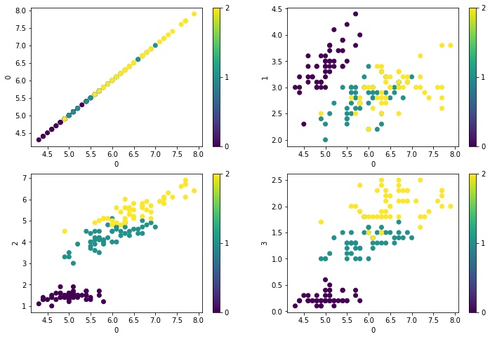
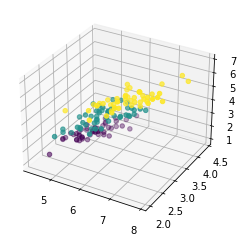
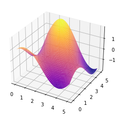
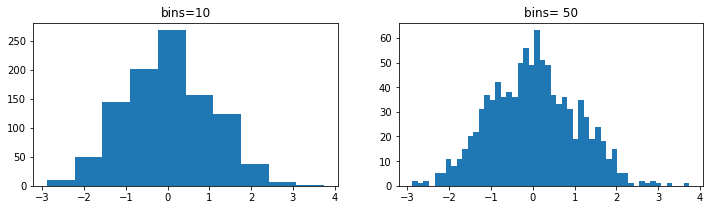
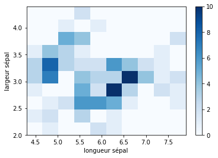
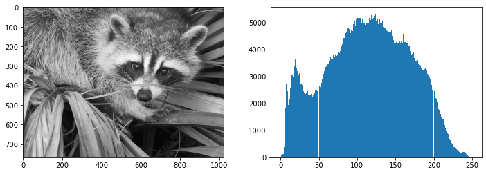
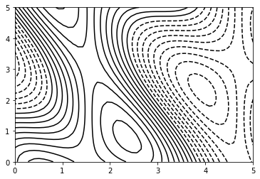
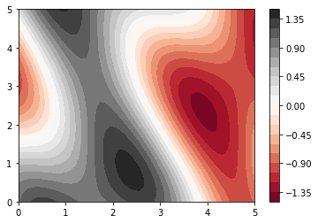
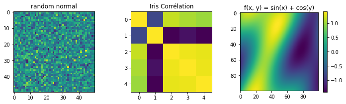

Matplotlib : Top Graphiques
import numpy as np
import matplotlib.pyplot as plt
1. Graphique de Classification avec Scatter()
from sklearn.datasets import load_iris
iris = load_iris()
x = iris.data
y = iris.target
print(f'x contient {x.shape[0]} exmples et {x.shape[1]} variables')
print(f'il y a {np.unique(y).size} classes')
-
x contient 150 exmples et 4 variables
il y a 3 classes
n = x.shape[1]
plt.figure(figsize=(12, 8))
for i in range(n):
plt.subplot(n//2, n//2, i+1)
plt.scatter(x[:, 0], x[:, i], c=y)
plt.xlabel('0')
plt.ylabel(i)
plt.colorbar(ticks=list(np.unique(y)))
plt.show()

from mpl_toolkits.mplot3d import Axes3D
ax = plt.axes(projection='3d')
ax.scatter(x[:, 0], x[:, 1], x[:,2], c=y)

f = lambda x, y: np.sin(x) + np.cos(x+y)
X = np.linspace(0, 5, 50)
Y = np.linspace(0, 5, 50)
X, Y = np.meshgrid(X, Y)
Z = f(X, Y)
ax = plt.axes(projection='3d')
ax.plot_surface(X, Y, Z, cmap='plasma')
plt.show()

3. Histogrammes
x = np.random.randn(1000)
plt.figure(figsize=(12, 3))
plt.subplot(121)
plt.hist(x, bins=10)
plt.title('bins=10')
plt.subplot(122)
plt.hist(x, bins=50)
plt.title('bins= 50')
plt.show()

x = iris.data
plt.hist2d(x[:,0], x[:,1], cmap='Blues')
plt.xlabel('longueur sépal')
plt.ylabel('largeur sépal')
plt.colorbar()

histogramme d'une image
from scipy import misc face = misc.face(gray=True)
plt.figure(figsize=(12, 4)) plt.subplot(121) plt.imshow(face, cmap='gray') plt.subplot(122) plt.hist(face.ravel(), bins=255) plt.show()

4. Graphiques ContourPlot()
f = lambda x, y: np.sin(x) + np.cos(x+y)*np.cos(x)
X = np.linspace(0, 5, 50)
Y = np.linspace(0, 5, 50)
X, Y = np.meshgrid(X, Y)
Z = f(X, Y)
plt.contour(X, Y, Z, 20, colors='black')

plt.contourf(X, Y, Z, 20, cmap='RdGy')
plt.colorbar()

5. Imshow()
plt.figure(figsize=(12, 3))
# Simple graphique imshow()
X = np.random.randn(50, 50)
plt.subplot(131)
plt.imshow(X)
plt.title('random normal')
# Matrice de corrélation des iris
from sklearn.datasets import load_iris
iris = load_iris()
X = iris.data
y = iris.target
plt.subplot(132)
plt.imshow(np.corrcoef(X.T, y))
plt.title('Iris Corrélation')
# Matrice f(X, Y) = sin(X) + cos(Y)
X = np.linspace(0, 5, 100)
Y = np.linspace(0, 5, 100)
X, Y = np.meshgrid(X, Y)
plt.subplot(133)
plt.imshow(f(X, Y))
plt.colorbar()
plt.title('f(x, y) = sin(x) + cos(y)')
